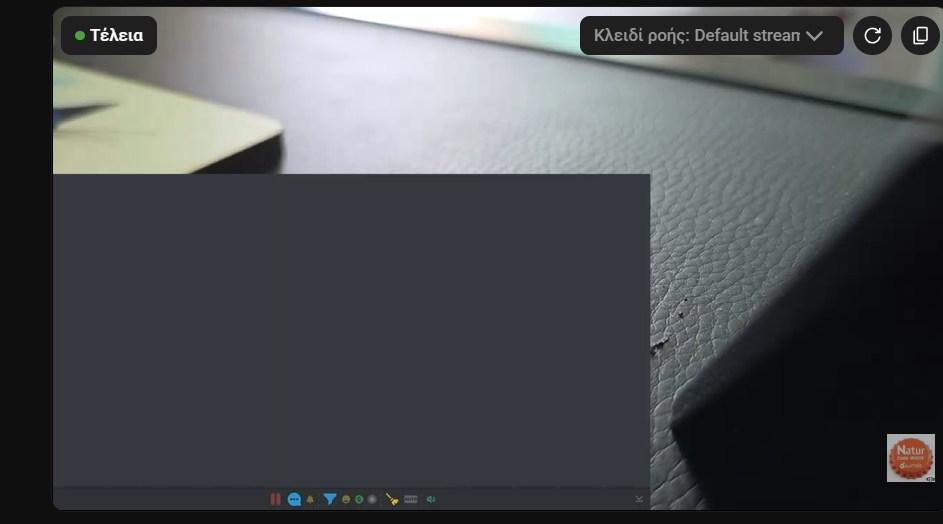
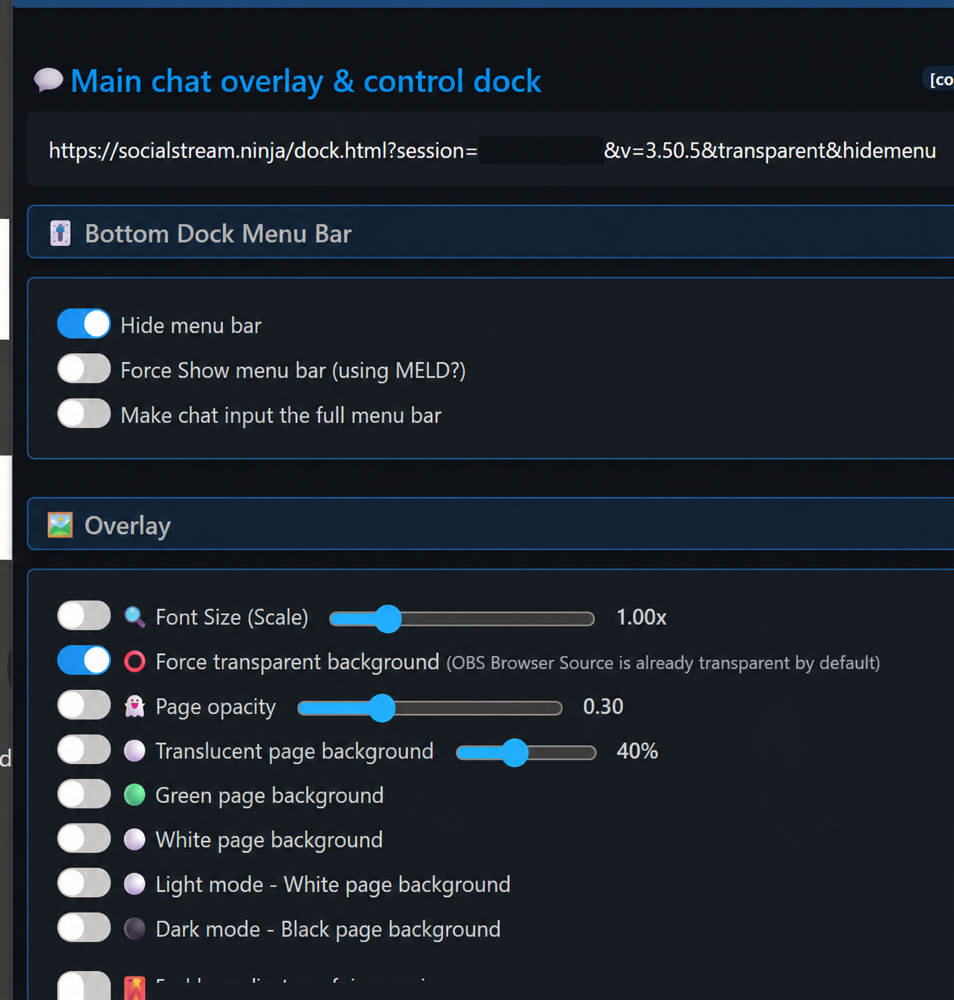

The Problem
If the Dock URL is opened in MELD, the Social Stream desktop app, or another browser container, it may show a large grey rectangle and a bottom menu bar. The Dock is working; its page background is simply not transparent yet.

Turn On These Two Settings
- Open Social Stream Ninja settings and find Main chat overlay & control dock.
- Expand Bottom Dock Menu Bar and enable Hide menu bar.
- Expand Overlay and enable Force transparent background.
- Copy the updated Dock URL and replace the old URL in the app where you display it. If it is already open, reload it.

The updated URL should contain both transparent and hidemenu. Keep your own session value unchanged.
What You Should See
The grey page and bottom menu disappear. Chat messages remain visible over the video or content behind the Dock.
OBS Browser Sources are transparent by default, so this manual setting is mainly needed for MELD, desktop overlay windows, and other non-OBS browser containers.
If the Grey Box Remains
- Confirm the URL you are displaying contains
transparentandhidemenu. - Reload the page or remove and re-add it after replacing the URL.
- Leave Translucent page background, Green page background, White page background, Light mode, and Dark mode turned off.
- Check that the app displaying the URL supports transparent browser backgrounds.